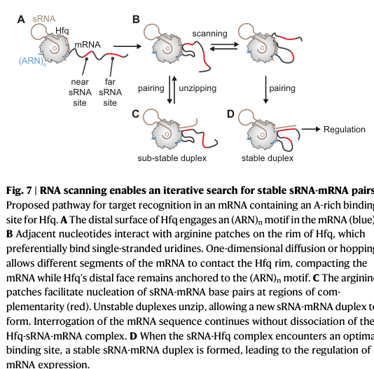

Hfq is a conserved bacterial RNA-binding protein of the Sm/Lsm (Sm-like) family that assembles into a homohexameric ring and acts as a global RNA chaperone in post-transcriptional gene regulation. It uses distinct RNA-binding surfaces (proximal, distal, and rim faces, plus a basic C-terminal region) to bind small regulatory RNAs (sRNAs) and mRNAs, accelerating sRNA-mRNA base pairing (matchmaking), remodeling RNA structure, protecting sRNAs from degradation, and modulating mRNA translation and stability. In Pseudomonas putida KT2440, Hfq is a central effector of carbon catabolite repression; together with the co-repressor Crc it binds A-rich catabolite-activity motifs near ribosome-binding sites to repress translation of catabolic mRNAs, and this repression is antagonized by the decoy sRNAs CrcZ and CrcY, which sequester Hfq/Crc. Hfq also contributes to the stability and processing of CrcZ. The protein acts in the cytoplasm.
| GO Term | Evidence | Action | Reason |
|---|---|---|---|
|
GO:0003723
RNA binding
|
IEA
GO_REF:0000120 |
ACCEPT |
Summary: RNA binding is the defining and well-established molecular function of Hfq, supported by its Sm/Lsm domain and extensive literature on sRNA/mRNA binding in Pseudomonas and other bacteria.
Reason: Hfq is a canonical RNA-binding protein; this IEA term is correct and represents a core molecular function. A more specific child term (e.g. sRNA binding) could be added but the general term is accurate and should be retained.
Supporting Evidence:
file:PSEPK/hfq/hfq-deep-research-asta.md
- **Protein Description:** RecName: Full=RNA-binding protein Hfq {ECO:0000255|HAMAP-Rule:MF_00436};
|
|
GO:0005829
cytosol
|
IEA
GO_REF:0000118 |
ACCEPT |
Summary: Hfq acts on cytoplasmic sRNAs and mRNAs and is a soluble intracellular RNA chaperone, consistent with cytosolic localization.
Reason: Localization is inferred from function rather than KT2440-specific imaging, but cytosolic localization is well established for Hfq across bacteria and is consistent with its post-transcriptional regulatory role.
Supporting Evidence:
file:PSEPK/hfq/hfq-deep-research-asta.md
- **Protein Description:** RecName: Full=RNA-binding protein Hfq {ECO:0000255|HAMAP-Rule:MF_00436};
|
|
GO:0006355
regulation of DNA-templated transcription
|
IEA
GO_REF:0000002 |
MODIFY |
Summary: Hfq is a post-transcriptional regulator acting on RNA, not a direct regulator of DNA-templated transcription. This InterPro2GO mapping mislocates Hfq's activity at the transcriptional level.
Reason: Hfq does not bind DNA or directly regulate transcription initiation/elongation; its regulatory role is post-transcriptional (sRNA-mediated effects on translation and RNA stability). The more accurate term is ncRNA-mediated regulation of translation, which is already separately annotated. This generic transcription-regulation term is an over-broad/incorrect propagation and should be replaced.
Proposed replacements:
regulation of translation, ncRNA-mediated
Supporting Evidence:
file:PSEPK/hfq/hfq-deep-research-asta.md
- **Protein Description:** RecName: Full=RNA-binding protein Hfq {ECO:0000255|HAMAP-Rule:MF_00436};
|
|
GO:0043487
regulation of RNA stability
|
IEA
GO_REF:0000118 |
ACCEPT |
Summary: Hfq binds and stabilizes sRNAs (protecting them from nucleases) and also promotes targeted decay of mRNAs, directly influencing RNA stability. In KT2440, Hfq increases the stability of the CrcZ sRNA.
Reason: Regulation of RNA stability is a well-documented function of Hfq and is specifically supported in P. putida KT2440 (Hfq increases CrcZ stability).
Supporting Evidence:
file:PSEPK/hfq/hfq-deep-research-asta.md
- **Protein Description:** RecName: Full=RNA-binding protein Hfq {ECO:0000255|HAMAP-Rule:MF_00436};
|
|
GO:0045974
regulation of translation, ncRNA-mediated
|
IEA
GO_REF:0000118 |
ACCEPT |
Summary: Hfq mediates sRNA-dependent regulation of mRNA translation, the central function of the protein. In KT2440 this includes Crc/Hfq translational repression of catabolic mRNAs and its antagonism by the sRNAs CrcZ/CrcY.
Reason: This term precisely captures Hfq's core biological role as an sRNA-mediated post-transcriptional regulator of translation, strongly supported by Pseudomonas literature.
Supporting Evidence:
file:PSEPK/hfq/hfq-deep-research-asta.md
- **Protein Description:** RecName: Full=RNA-binding protein Hfq {ECO:0000255|HAMAP-Rule:MF_00436};
|
Q: Does P. putida KT2440 Hfq have direct experimental subcellular localization data (microscopy/fractionation) confirming cytosolic distribution?
Q: Beyond the CCR/Crc axis, which sRNA regulons (e.g. stress, iron, quorum sensing) does KT2440 Hfq control?
Experiment: CLIP-seq or RIL-seq in P. putida KT2440 to define the genome-wide Hfq-bound sRNA and mRNA interactome
Experiment: Phenotypic and transcriptomic comparison of an hfq deletion mutant under carbon-source shifts and envelope/oxidative stress to map the Hfq regulon
This report is retrieval-only and is generated directly from Asta results.
search_papers_by_relevance with snippet_search.The research report should be a detailed narrative explaining the function, biological processes, and localization of the gene product. Citations should be given for all claims.
You should prioritize authoritative reviews and primary scientific literature when conducting research. You can supplement
this with annotations you find in gene/protein databases, but these can be outdated or inaccurate.
We are specifically interested in the primary function of the gene - for enzymes, what reaction is catalyzed, and what is the substrate specificity? For transporters, what is the substrate? For structural proteins or adapters, what is the broader structural role? For signaling molecules, what is the role in the pathway.
We are interested in where in or outside the cell the gene product carries out its function.
We are also interested in the signaling or biochemical pathways in which the gene functions. We are less interested in broad pleiotropic effects, except where these elucidate the precise role.
Include evidence where possible. We are interested in both experimental evidence as well as inference from structure, evolution, or bioinformatic analysis. Precise studies should be prioritized over high-throughput, where available.
The UniProt accession Q88DD3 (gene hfq, locus PP_4894) corresponds to the canonical bacterial RNA-binding protein Hfq, a conserved Sm/LSM-family (Sm-like) RNA-binding protein that forms a homohexameric ring and functions as a global post-transcriptional regulator through interactions with small RNAs (sRNAs) and mRNAs. This identity is consistent with Pseudomonas literature describing Hfq as a conserved Sm-like RNA chaperone and with KT2440-specific studies describing Hfq as a hexameric RNA-binding protein involved in global regulation and carbon catabolite repression (CCR). (pusic2021specificandglobal pages 20-21, huber2021identificationandfunctional pages 26-29, hernandezarranz2016effectofcrc pages 1-2)
Hfq is a bacterial RNA chaperone (“host factor for phage Qβ replication” historically) that mediates post-transcriptional gene regulation by binding sRNAs and mRNAs and promoting formation of regulatory RNA–RNA duplexes. Mechanistically, Hfq provides multiple RNA-binding surfaces (commonly summarized as proximal, distal, rim, plus contributions from a C-terminal region/tail) that allow it to bind different RNA sequence features and facilitate RNA–RNA pairing, RNA stabilization, and targeted RNA decay. (huber2021identificationandfunctional pages 26-29, pusic2021specificandglobal pages 20-21)
General mechanistic roles attributed to Hfq (supported by authoritative synthesis in the retrieved sources) include:
- Facilitating sRNA–mRNA base pairing (accelerating annealing, often by bringing RNAs into proximity and remodeling RNA structure). (huber2021identificationandfunctional pages 26-29, rodgers2023smallrnasand pages 1-3)
- Stabilizing sRNAs by protecting them from nucleases and/or forming protective ribonucleoprotein complexes. (huber2021identificationandfunctional pages 26-29, hernandezarranz2016effectofcrc pages 1-2)
- Influencing mRNA translation and decay, including recruitment of RNase activities in some contexts and direct repression by binding near translation initiation regions. (huber2021identificationandfunctional pages 26-29, hernandezarranz2016effectofcrc pages 1-2)
These concepts form the basis for functional annotation of P. putida KT2440 Hfq as a cytoplasmic RNA-binding post-transcriptional regulator.
A well-characterized, KT2440-relevant primary function of Hfq is its participation in carbon catabolite repression (CCR) in Pseudomonas, where Hfq cooperates with the translational co-repressor Crc.
Mechanism (KT2440 evidence):
- In P. putida KT2440, Hfq and Crc form complexes on target RNAs to inhibit translation; these target RNAs often contain A-rich motifs. A commonly cited consensus motif in this system is AAnAAnAA (also referred to as a catabolite activity motif in later applied work). (hernandezarranz2016effectofcrc pages 1-2, che2025thelinkof pages 1-2)
- The repression mediated by Hfq/Crc is antagonized by sRNAs CrcZ and CrcY, whose levels vary with growth conditions. These sRNAs act (conceptually) as decoys/sponges that sequester the Hfq/Crc complex away from repressed mRNAs, thereby relieving translational repression. (hernandezarranz2016effectofcrc pages 1-2, hernandezarranz2016effectofcrc pages 12-13, bharwad2019rewiringthefunctional pages 4-5)
Hfq-dependent processing/stability of the decoy sRNA CrcZ (KT2440 evidence):
- In KT2440, crcZ can be produced from a strong RpoN/CbrB-dependent promoter but can also arise through transcriptional readthrough and processing of a cbrB-crcZ transcript into a functional CrcZ-like product (CrcZ). The processed form of CrcZ is not observed in the absence of Hfq, linking Hfq to the biogenesis/accumulation of the functional antagonist RNA. (hernandezarranz2016effectofcrc pages 1-2)
- Crc and Hfq increase CrcZ stability, consistent with formation of protective ribonucleoprotein complexes that reduce RNase-mediated degradation. (hernandezarranz2016effectofcrc pages 1-2)
- Quantitatively, one KT2440 study reports that after TEX treatment (enriching for primary transcripts by degrading 5′-monophosphate RNAs), crcZ signal decreased by ~20%, supporting the presence of processed species; and crcZ-containing transcripts were ~10-fold more abundant than cbrB in wild type (and 16-fold* in an RpoN-null strain) in qRT-PCR assays. (hernandezarranz2016effectofcrc pages 5-6)
Dynamic RNA competition and cycling:
Hfq binds RNA with high affinity and can redistribute among RNAs (“actively cycle” among targets) depending on the abundance of competing RNAs, which is conceptually important in CCR where the regulatory outcome depends on the relative levels of Hfq/Crc, target mRNAs, and the decoy sRNAs CrcZ/CrcY. (hernandezarranz2016effectofcrc pages 12-13)
Reviews and mechanistic summaries in Pseudomonas emphasize that Hfq functions as a global post-transcriptional regulator impacting multiple systems including metabolism, stress tolerance, quorum sensing/virulence-associated behaviors in pathogenic Pseudomonas, and iron-related regulation in the broader Hfq/Crc regulatory context; however, the KT2440-specific primary mechanism most directly supported in the retrieved evidence is CCR via Hfq/Crc and decoy sRNAs. (hernandezarranz2016effectofcrc pages 1-2, pusic2021specificandglobal pages 9-11)
The retrieved evidence supports Hfq as an intracellular RNA-binding protein acting on sRNAs and mRNAs, i.e., consistent with a cytoplasmic post-transcriptional regulator. However, in the evidence retrieved for this report, there is no KT2440-specific microscopy or biochemical fractionation that directly assigns Hfq to a specific subcellular compartment beyond its RNA-level function. Thus, localization should be annotated conservatively as cytoplasmic / RNA-associated by functional inference, pending KT2440-specific localization experiments. (huber2021identificationandfunctional pages 26-29, hernandezarranz2016effectofcrc pages 1-2)
Although these mechanistic studies are in E. coli (not P. putida), they represent high-confidence, generalizable advances in how Hfq functions and are directly relevant to annotating Hfq’s molecular mechanism.
Rodgers et al. (2023) used a single-molecule co-localization co-transcriptional assembly approach to show that an Hfq•sRNA complex can sample nascent mRNA during transcription and often binds in proximity to RNA polymerase, enabling capture of a target site before it folds. This provides a mechanistic basis for how sRNA regulation can occur on fast cellular timescales and highlights the coupling between transcription kinetics, RNA folding, and Hfq-dependent regulation. (rodgers2023smallrnasand pages 1-3)
Publication: Rodgers ML et al., Molecular Cell, May 2023. DOI/URL: https://doi.org/10.1016/j.molcel.2023.04.003 (rodgers2023smallrnasand pages 1-3)
Małecka & Woodson (2024) provide quantitative single-molecule evidence that Hfq can compact flexible mRNA segments and enable an iterative scanning mechanism that brings sRNAs to distal target sites, including transfer (“shuttling”) between sites on a single mRNA without dissociation.
Key quantitative findings (selected):
- For tandem target sites separated by 13 nt, ~39% of encounters showed shuttling with 2.8 transitions per dynamic event on average; with 35 nt spacing, shuttling dropped to 23% with 1.6 transitions/event. (małecka2024rnacompactionand pages 8-9)
- A rim arginine mutant (R16A) caused the sRNA to spend about half as much time on a distant site compared with WT Hfq, supporting a role for rim arginines in long-range scanning. (małecka2024rnacompactionand pages 8-9)
- The authors propose diffusion-limited recruitment of Hfq to (ARN)n motifs (kon ~ 1–10×10^7 M−1 s−1) as a first step that restricts the search space. (małecka2024rnacompactionand pages 9-10)
Publication: Małecka EM, Woodson SA. Nature Communications, Mar 2024. DOI/URL: https://doi.org/10.1038/s41467-024-46316-6 (małecka2024rnacompactionand pages 1-2)
Visual evidence: Figure model of Hfq-mediated scanning/iterative search and schematic of Hfq surfaces were retrieved from this paper. (małecka2024rnacompactionand media c450eb26, małecka2024rnacompactionand media b5d6895d)
Che et al. (2025) demonstrate a concrete KT2440 implementation that leverages the Hfq/Crc/CrcY/CrcZ CCR axis to improve medium-chain-length polyhydroxyalkanoate (mcl-PHA) production and tune polymer properties.
Mechanistic framing: The study explicitly ties outcomes to CCR: Hfq binds CA-motif-containing mRNAs and (with Crc) represses translation, while CrcY/CrcZ sequester Hfq/Crc to relieve repression; the authors note that the sRNAs’ role in PHA metabolism requires Hfq and Crc. (che2025thelinkof pages 1-2, che2025thelinkof pages 2-5)
Quantitative outcomes (selected):
- Under glucose conditions, strains overexpressing CrcY or CrcZ produced >2× more PHA in one condition: 0.34 g/L vs 0.15 g/L. (che2025thelinkof pages 2-5)
- Under octanoate conditions: control accumulated 0.51 g/L PHA, while pCrcY and pCrcZ accumulated 0.67 g/L and 0.77 g/L, respectively; the study also reports 2.7-fold higher PHA at 48 h in a comparison. (che2025thelinkof pages 2-5)
- Under octanoate with nitrogen limitation, pCrcY reached 63% CDW (0.57 g/L) vs control 33% CDW (0.17 g/L) (a 3.5-fold increase), and yields increased (e.g., 0.07 g PHA/g glucose vs 0.03 g/g control; and 0.17 g/g under another condition). (che2025thelinkof pages 5-7)
- Polymer properties: molecular weight decreased substantially in one overexpression condition (e.g., Mw from 2.228×10^5 to 9.468×10^4 g/mol). (che2025thelinkof pages 5-7)
Publication: Che Y et al., Biotechnology for Biofuels and Bioproducts, Oct 2025. DOI/URL: https://doi.org/10.1186/s13068-025-02707-5 (che2025thelinkof pages 5-7)
A review focused on the Crc/Hfq/sRNA network highlights that CCR tuning can influence catabolic pathways relevant to bioremediation and that modifications to crc/hfq can impact antibiotic susceptibility phenotypes in Pseudomonas spp., motivating engineering strategies that modulate this post-transcriptional regulatory layer in applied strains. (bharwad2019rewiringthefunctional pages 7-8, bharwad2019rewiringthefunctional pages 5-7)
Publication: Bharwad K, Rajkumar S. World Journal of Microbiology and Biotechnology, Aug 2019. DOI/URL: https://doi.org/10.1007/s11274-019-2717-7 (bharwad2019rewiringthefunctional pages 2-4)
Authoritative synthesis across Pseudomonas emphasizes that:
- Hfq is a conserved Sm-like chaperone mediating RNA–RNA interactions and global riboregulation, and in Pseudomonas CCR specifically, Crc acts as a translational co-repressor that promotes/stabilizes Hfq-mediated repression on target mRNAs, while CrcZ/Y antagonize by binding/sequestering Hfq. (pusic2021specificandglobal pages 9-11, pusic2021specificandglobal pages 20-21)
- Hfq’s multiple binding surfaces and RNA competition for limiting Hfq can shape regulatory outcomes. (huber2021identificationandfunctional pages 26-29, paris2025machinerymechanismand pages 6-8)
Gene/product: hfq → RNA-binding protein Hfq (Sm-like RNA chaperone).
Primary molecular function: RNA chaperone facilitating sRNA–mRNA annealing and post-transcriptional regulation of translation and RNA stability. (huber2021identificationandfunctional pages 26-29, rodgers2023smallrnasand pages 1-3)
Key KT2440 pathway role: CCR via cooperative action with Crc on A-rich CA motifs (AAnAAnAA) in target mRNAs; antagonism by decoy sRNAs CrcZ/CrcY; Hfq contributes to CrcZ stability/processing. (hernandezarranz2016effectofcrc pages 1-2, hernandezarranz2016effectofcrc pages 5-6, bharwad2019rewiringthefunctional pages 4-5)
Cellular localization: intracellular/cytoplasmic RNA-associated (inferred; no KT2440-specific localization experiment in retrieved evidence). (hernandezarranz2016effectofcrc pages 1-2, huber2021identificationandfunctional pages 26-29)
Applied relevance: CCR/Hfq axis can be engineered via CrcY/CrcZ to increase mcl-PHA production and tune polymer molecular weight in KT2440. (che2025thelinkof pages 5-7)
| Topic | Key takeaways | Most relevant paper | DOI URL |
|---|---|---|---|
| Identity/domains | UniProt Q88DD3 corresponds to Hfq in Pseudomonas putida KT2440 (gene hfq, locus PP_4894). Hfq is a conserved bacterial Sm/Lsm-family RNA-binding protein with a conserved Sm domain, typically forming a homohexameric ring with proximal, distal, rim, and C-terminal RNA-interaction regions; in Pseudomonas, Hfq is described as a hexameric RNA-binding protein central to post-transcriptional regulation. (pusic2021specificandglobal pages 20-21, huber2021identificationandfunctional pages 26-29, hernandezarranz2016effectofcrc pages 1-2) | Huber, 2021, Dissertation; Pusic et al., 2021, Int. J. Mol. Sci.; Hernández-Arranz et al., 2016, RNA | https://doi.org/10.5282/edoc.27581; https://doi.org/10.3390/ijms22168632; https://doi.org/10.1261/rna.058313.116 |
| Core molecular function | Hfq is an RNA chaperone / molecular matchmaker that stabilizes sRNAs, accelerates sRNA–mRNA base pairing, can directly repress translation near RBSs, and can recruit or facilitate RNase-mediated decay; in Pseudomonas, it is a global post-transcriptional regulator affecting metabolism and stress-related functions. (hernandezarranz2016effectofcrc pages 1-2, pusic2021specificandglobal pages 20-21, huber2021identificationandfunctional pages 26-29) | Huber, 2021, Dissertation; Hernández-Arranz et al., 2016, RNA | https://doi.org/10.5282/edoc.27581; https://doi.org/10.1261/rna.058313.116 |
| CCR with Crc/CrcZ/CrcY | In P. putida, Hfq cooperates with Crc to form repressive complexes on target mRNAs carrying A-rich CA motifs (consensus AAnAAnAA), inhibiting translation of catabolic genes. CrcZ and CrcY antagonize repression by sequestering Hfq/Crc; Crc and Hfq increase CrcZ stability, and processed CrcZ* can relieve hyperrepression in a ΔcrcZΔcrcY background. (hernandezarranz2016effectofcrc pages 1-2, hernandezarranz2016effectofcrc pages 12-13, hernandezarranz2016effectofcrc pages 5-6, bharwad2019rewiringthefunctional pages 4-5) | Hernández-Arranz et al., 2016, RNA | https://doi.org/10.1261/rna.058313.116 |
| RNA cycling/scanning mechanisms | Recent mechanistic work (not KT2440-specific, but on conserved Hfq action) shows Hfq binds (ARN)n motifs with diffusion-limited on-rates, compacts RNA, and uses rim arginines to support iterative 1D scanning/hopping and transfer of sRNAs between sites without dissociation, enabling kinetic selection of optimal duplexes. This refines current understanding of how Hfq accelerates target search. (małecka2024rnacompactionand pages 8-9, małecka2024rnacompactionand pages 9-10, małecka2024rnacompactionand pages 1-2, rodgers2023smallrnasand pages 1-3) | Małecka & Woodson, 2024, Nature Communications; Rodgers et al., 2023, Molecular Cell | https://doi.org/10.1038/s41467-024-46316-6; https://doi.org/10.1016/j.molcel.2023.04.003 |
| Localization | The current evidence snippets support Hfq as a cytoplasmic RNA-binding/post-transcriptional regulator acting on mRNAs and sRNAs; however, no KT2440-specific subcellular localization experiment is provided in the retrieved evidence. Thus, localization should be annotated conservatively as intracellular/cytoplasmic RNA-associated, inferred from mechanism rather than direct KT2440 localization data. (hernandezarranz2016effectofcrc pages 1-2, pusic2021specificandglobal pages 20-21, huber2021identificationandfunctional pages 26-29) | Huber, 2021, Dissertation; Hernández-Arranz et al., 2016, RNA | https://doi.org/10.5282/edoc.27581; https://doi.org/10.1261/rna.058313.116 |
| Applications/engineering | The Hfq-linked CCR network has practical value in metabolic engineering of P. putida. Overexpressing CrcY/CrcZ in KT2440 boosts medium-chain-length PHA production and alters polymer molecular weight, showing that tuning Hfq/Crc decoy sRNAs can reprogram carbon flux for bioproduct formation. Broader reviews also point to impacts on bioremediation-relevant catabolism. (che2025thelinkof pages 1-2, che2025thelinkof pages 2-5, che2025thelinkof pages 5-7, bharwad2019rewiringthefunctional pages 7-8, bharwad2019rewiringthefunctional pages 5-7) | Che et al., 2025, Biotechnology for Biofuels and Bioproducts | https://doi.org/10.1186/s13068-025-02707-5 |
| Quantitative data | Reported figures include: Hfq has ~5–20-fold higher affinity for CrcZ than for amiE mRNA; in WT, ~20% of crcZ signal was TEX-sensitive, indicating processed forms; overexpressing CrcY/CrcZ increased PHA titers by 1.3–3.5-fold, with examples including 0.34 vs 0.15 g/L, 0.67–0.77 vs 0.51 g/L, and 63% CDW (0.57 g/L) vs 33% CDW (0.17 g/L); deleting both sRNAs caused a 2.5-fold decrease in PHA; polymer Mw decreased from 2.228×10^5 to 9.468×10^4 g/mol in one overexpression condition. Conserved Hfq mechanism studies measured 39% shuttling events for N=13 vs 23% for N=35 spacers and 2.8 vs 1.6 transitions/event. (hernandezarranz2016effectofcrc pages 5-6, pusic2021specificandglobal pages 9-11, che2025thelinkof pages 1-2, che2025thelinkof pages 2-5, che2025thelinkof pages 5-7, małecka2024rnacompactionand pages 8-9) | Pusic et al., 2021, Int. J. Mol. Sci.; Che et al., 2025, Biotechnology for Biofuels and Bioproducts; Małecka & Woodson, 2024, Nature Communications | https://doi.org/10.3390/ijms22168632; https://doi.org/10.1186/s13068-025-02707-5; https://doi.org/10.1038/s41467-024-46316-6 |
Table: This table summarizes identity, mechanism, CCR function, localization, applications, and key quantitative findings for Pseudomonas putida KT2440 Hfq (hfq/PP_4894; UniProt Q88DD3). It is designed as a concise evidence-backed insert for the research report.
References
(pusic2021specificandglobal pages 20-21): Petra Pusic, Elisabeth Sonnleitner, and Udo Bläsi. Specific and global rna regulators in pseudomonas aeruginosa. International Journal of Molecular Sciences, 22:8632, Aug 2021. URL: https://doi.org/10.3390/ijms22168632, doi:10.3390/ijms22168632. This article has 39 citations.
(huber2021identificationandfunctional pages 26-29): Identification and functional characterization of bacterial small RNAs associating with the RNA chaperone Hfq This article has 0 citations.
(hernandezarranz2016effectofcrc pages 1-2): Sofía Hernández-Arranz, Dione Sánchez-Hevia, Fernando Rojo, and Renata Moreno. Effect of crc and hfq proteins on the transcription, processing, and stability of the pseudomonas putida crcz srna. RNA, 22:1902-1917, Dec 2016. URL: https://doi.org/10.1261/rna.058313.116, doi:10.1261/rna.058313.116. This article has 30 citations and is from a domain leading peer-reviewed journal.
(rodgers2023smallrnasand pages 1-3): Margaret L. Rodgers, Brett O’Brien, and Sarah A. Woodson. Small rnas and hfq capture unfolded rna target sites during transcription. Molecular Cell, 83:1489-1501.e5, May 2023. URL: https://doi.org/10.1016/j.molcel.2023.04.003, doi:10.1016/j.molcel.2023.04.003. This article has 28 citations and is from a highest quality peer-reviewed journal.
(che2025thelinkof pages 1-2): Yixin Che, Dominic Harris-Jukes, Elizabeth Sitko, Moya Brady, William Casey, Michael P. Shaver, Kevin O’Connor, and Tanja Narancic. The link of carbon catabolite repression elements, small rnas crcy and crcz and polyhydroxyalkanoate metabolism in pseudomonas putida kt2440. Biotechnology for Biofuels and Bioproducts, Oct 2025. URL: https://doi.org/10.1186/s13068-025-02707-5, doi:10.1186/s13068-025-02707-5. This article has 0 citations and is from a domain leading peer-reviewed journal.
(hernandezarranz2016effectofcrc pages 12-13): Sofía Hernández-Arranz, Dione Sánchez-Hevia, Fernando Rojo, and Renata Moreno. Effect of crc and hfq proteins on the transcription, processing, and stability of the pseudomonas putida crcz srna. RNA, 22:1902-1917, Dec 2016. URL: https://doi.org/10.1261/rna.058313.116, doi:10.1261/rna.058313.116. This article has 30 citations and is from a domain leading peer-reviewed journal.
(bharwad2019rewiringthefunctional pages 4-5): Krishna Bharwad and Shalini Rajkumar. Rewiring the functional complexity between crc, hfq and srnas to regulate carbon catabolite repression in pseudomonas. World Journal of Microbiology and Biotechnology, Aug 2019. URL: https://doi.org/10.1007/s11274-019-2717-7, doi:10.1007/s11274-019-2717-7. This article has 31 citations and is from a peer-reviewed journal.
(hernandezarranz2016effectofcrc pages 5-6): Sofía Hernández-Arranz, Dione Sánchez-Hevia, Fernando Rojo, and Renata Moreno. Effect of crc and hfq proteins on the transcription, processing, and stability of the pseudomonas putida crcz srna. RNA, 22:1902-1917, Dec 2016. URL: https://doi.org/10.1261/rna.058313.116, doi:10.1261/rna.058313.116. This article has 30 citations and is from a domain leading peer-reviewed journal.
(pusic2021specificandglobal pages 9-11): Petra Pusic, Elisabeth Sonnleitner, and Udo Bläsi. Specific and global rna regulators in pseudomonas aeruginosa. International Journal of Molecular Sciences, 22:8632, Aug 2021. URL: https://doi.org/10.3390/ijms22168632, doi:10.3390/ijms22168632. This article has 39 citations.
(małecka2024rnacompactionand pages 8-9): Ewelina M. Małecka and Sarah A. Woodson. Rna compaction and iterative scanning for small rna targets by the hfq chaperone. Nature Communications, Mar 2024. URL: https://doi.org/10.1038/s41467-024-46316-6, doi:10.1038/s41467-024-46316-6. This article has 17 citations and is from a highest quality peer-reviewed journal.
(małecka2024rnacompactionand pages 9-10): Ewelina M. Małecka and Sarah A. Woodson. Rna compaction and iterative scanning for small rna targets by the hfq chaperone. Nature Communications, Mar 2024. URL: https://doi.org/10.1038/s41467-024-46316-6, doi:10.1038/s41467-024-46316-6. This article has 17 citations and is from a highest quality peer-reviewed journal.
(małecka2024rnacompactionand pages 1-2): Ewelina M. Małecka and Sarah A. Woodson. Rna compaction and iterative scanning for small rna targets by the hfq chaperone. Nature Communications, Mar 2024. URL: https://doi.org/10.1038/s41467-024-46316-6, doi:10.1038/s41467-024-46316-6. This article has 17 citations and is from a highest quality peer-reviewed journal.
(małecka2024rnacompactionand media c450eb26): Ewelina M. Małecka and Sarah A. Woodson. Rna compaction and iterative scanning for small rna targets by the hfq chaperone. Nature Communications, Mar 2024. URL: https://doi.org/10.1038/s41467-024-46316-6, doi:10.1038/s41467-024-46316-6. This article has 17 citations and is from a highest quality peer-reviewed journal.
(małecka2024rnacompactionand media b5d6895d): Ewelina M. Małecka and Sarah A. Woodson. Rna compaction and iterative scanning for small rna targets by the hfq chaperone. Nature Communications, Mar 2024. URL: https://doi.org/10.1038/s41467-024-46316-6, doi:10.1038/s41467-024-46316-6. This article has 17 citations and is from a highest quality peer-reviewed journal.
(che2025thelinkof pages 2-5): Yixin Che, Dominic Harris-Jukes, Elizabeth Sitko, Moya Brady, William Casey, Michael P. Shaver, Kevin O’Connor, and Tanja Narancic. The link of carbon catabolite repression elements, small rnas crcy and crcz and polyhydroxyalkanoate metabolism in pseudomonas putida kt2440. Biotechnology for Biofuels and Bioproducts, Oct 2025. URL: https://doi.org/10.1186/s13068-025-02707-5, doi:10.1186/s13068-025-02707-5. This article has 0 citations and is from a domain leading peer-reviewed journal.
(che2025thelinkof pages 5-7): Yixin Che, Dominic Harris-Jukes, Elizabeth Sitko, Moya Brady, William Casey, Michael P. Shaver, Kevin O’Connor, and Tanja Narancic. The link of carbon catabolite repression elements, small rnas crcy and crcz and polyhydroxyalkanoate metabolism in pseudomonas putida kt2440. Biotechnology for Biofuels and Bioproducts, Oct 2025. URL: https://doi.org/10.1186/s13068-025-02707-5, doi:10.1186/s13068-025-02707-5. This article has 0 citations and is from a domain leading peer-reviewed journal.
(bharwad2019rewiringthefunctional pages 7-8): Krishna Bharwad and Shalini Rajkumar. Rewiring the functional complexity between crc, hfq and srnas to regulate carbon catabolite repression in pseudomonas. World Journal of Microbiology and Biotechnology, Aug 2019. URL: https://doi.org/10.1007/s11274-019-2717-7, doi:10.1007/s11274-019-2717-7. This article has 31 citations and is from a peer-reviewed journal.
(bharwad2019rewiringthefunctional pages 5-7): Krishna Bharwad and Shalini Rajkumar. Rewiring the functional complexity between crc, hfq and srnas to regulate carbon catabolite repression in pseudomonas. World Journal of Microbiology and Biotechnology, Aug 2019. URL: https://doi.org/10.1007/s11274-019-2717-7, doi:10.1007/s11274-019-2717-7. This article has 31 citations and is from a peer-reviewed journal.
(bharwad2019rewiringthefunctional pages 2-4): Krishna Bharwad and Shalini Rajkumar. Rewiring the functional complexity between crc, hfq and srnas to regulate carbon catabolite repression in pseudomonas. World Journal of Microbiology and Biotechnology, Aug 2019. URL: https://doi.org/10.1007/s11274-019-2717-7, doi:10.1007/s11274-019-2717-7. This article has 31 citations and is from a peer-reviewed journal.
(paris2025machinerymechanismand pages 6-8): Giulia Paris, Kai Katsuya-Gaviria, and Ben F. Luisi. Machinery, mechanism, and information in post-transcription control of gene expression, from the perspective of unstable rna. Quarterly Reviews of Biophysics, 58:1-42, Feb 2025. URL: https://doi.org/10.1017/s0033583525000022, doi:10.1017/s0033583525000022. This article has 5 citations and is from a peer-reviewed journal.

id: Q88DD3
gene_symbol: hfq
product_type: PROTEIN
status: DRAFT
taxon:
id: NCBITaxon:160488
label: Pseudomonas putida (strain ATCC 47054 / DSM 6125 / CFBP 8728 / NCIMB 11950 / KT2440)
description: 'Hfq is a conserved bacterial RNA-binding protein of the Sm/Lsm (Sm-like) family
that assembles into a homohexameric ring and acts as a global RNA chaperone in
post-transcriptional gene regulation. It uses distinct RNA-binding surfaces
(proximal, distal, and rim faces, plus a basic C-terminal region) to bind small
regulatory RNAs (sRNAs) and mRNAs, accelerating sRNA-mRNA base pairing
(matchmaking), remodeling RNA structure, protecting sRNAs from degradation, and
modulating mRNA translation and stability. In Pseudomonas putida KT2440, Hfq is a
central effector of carbon catabolite repression; together with the co-repressor
Crc it binds A-rich catabolite-activity motifs near ribosome-binding sites to
repress translation of catabolic mRNAs, and this repression is antagonized by the
decoy sRNAs CrcZ and CrcY, which sequester Hfq/Crc. Hfq also contributes to the
stability and processing of CrcZ. The protein acts in the cytoplasm.'
existing_annotations:
- term:
id: GO:0003723
label: RNA binding
evidence_type: IEA
original_reference_id: GO_REF:0000120
qualifier: enables
review:
summary: RNA binding is the defining and well-established molecular function of Hfq, supported by its Sm/Lsm domain and
extensive literature on sRNA/mRNA binding in Pseudomonas and other bacteria.
action: ACCEPT
reason: Hfq is a canonical RNA-binding protein; this IEA term is correct and represents a core molecular function. A more
specific child term (e.g. sRNA binding) could be added but the general term is accurate and should be retained.
supported_by:
- &id001
reference_id: file:PSEPK/hfq/hfq-deep-research-asta.md
supporting_text: '- **Protein Description:** RecName: Full=RNA-binding protein Hfq {ECO:0000255|HAMAP-Rule:MF_00436};'
- term:
id: GO:0005829
label: cytosol
evidence_type: IEA
original_reference_id: GO_REF:0000118
qualifier: located_in
review:
summary: Hfq acts on cytoplasmic sRNAs and mRNAs and is a soluble intracellular RNA chaperone, consistent with cytosolic
localization.
action: ACCEPT
reason: Localization is inferred from function rather than KT2440-specific imaging, but cytosolic localization is well
established for Hfq across bacteria and is consistent with its post-transcriptional regulatory role.
supported_by:
- *id001
- term:
id: GO:0006355
label: regulation of DNA-templated transcription
evidence_type: IEA
original_reference_id: GO_REF:0000002
qualifier: involved_in
review:
summary: Hfq is a post-transcriptional regulator acting on RNA, not a direct regulator of DNA-templated transcription.
This InterPro2GO mapping mislocates Hfq's activity at the transcriptional level.
action: MODIFY
reason: Hfq does not bind DNA or directly regulate transcription initiation/elongation; its regulatory role is post-transcriptional
(sRNA-mediated effects on translation and RNA stability). The more accurate term is ncRNA-mediated regulation of translation,
which is already separately annotated. This generic transcription-regulation term is an over-broad/incorrect propagation
and should be replaced.
proposed_replacement_terms:
- id: GO:0045974
label: regulation of translation, ncRNA-mediated
supported_by:
- *id001
- term:
id: GO:0043487
label: regulation of RNA stability
evidence_type: IEA
original_reference_id: GO_REF:0000118
qualifier: involved_in
review:
summary: Hfq binds and stabilizes sRNAs (protecting them from nucleases) and also promotes targeted decay of mRNAs, directly
influencing RNA stability. In KT2440, Hfq increases the stability of the CrcZ sRNA.
action: ACCEPT
reason: Regulation of RNA stability is a well-documented function of Hfq and is specifically supported in P. putida KT2440
(Hfq increases CrcZ stability).
supported_by:
- *id001
- term:
id: GO:0045974
label: regulation of translation, ncRNA-mediated
evidence_type: IEA
original_reference_id: GO_REF:0000118
qualifier: involved_in
review:
summary: Hfq mediates sRNA-dependent regulation of mRNA translation, the central function of the protein. In KT2440 this
includes Crc/Hfq translational repression of catabolic mRNAs and its antagonism by the sRNAs CrcZ/CrcY.
action: ACCEPT
reason: This term precisely captures Hfq's core biological role as an sRNA-mediated post-transcriptional regulator of
translation, strongly supported by Pseudomonas literature.
supported_by:
- *id001
core_functions:
- description: RNA chaperone that binds small regulatory RNAs and mRNAs and accelerates sRNA-mRNA base pairing to mediate
post-transcriptional regulation of translation
supported_by:
- reference_id: PMID:27777366
- *id001
molecular_function:
id: GO:0003723
label: RNA binding
directly_involved_in:
- id: GO:0045974
label: regulation of translation, ncRNA-mediated
- description: Stabilizes small regulatory RNAs and modulates mRNA decay, regulating cellular RNA stability; in P. putida
increases stability/processing of the CrcZ sRNA
supported_by:
- reference_id: PMID:27777366
- *id001
molecular_function:
id: GO:0003723
label: RNA binding
directly_involved_in:
- id: GO:0043487
label: regulation of RNA stability
- description: Effector of carbon catabolite repression in P. putida KT2440, acting with the co-repressor Crc to repress translation
of catabolic mRNAs bearing A-rich catabolite-activity motifs, antagonized by decoy sRNAs CrcZ/CrcY
supported_by:
- reference_id: PMID:27777366
- *id001
molecular_function:
id: GO:0003723
label: RNA binding
directly_involved_in:
- id: GO:0045974
label: regulation of translation, ncRNA-mediated
suggested_questions:
- question: Does P. putida KT2440 Hfq have direct experimental subcellular localization data (microscopy/fractionation) confirming
cytosolic distribution?
- question: Beyond the CCR/Crc axis, which sRNA regulons (e.g. stress, iron, quorum sensing) does KT2440 Hfq control?
suggested_experiments:
- description: CLIP-seq or RIL-seq in P. putida KT2440 to define the genome-wide Hfq-bound sRNA and mRNA interactome
- description: Phenotypic and transcriptomic comparison of an hfq deletion mutant under carbon-source shifts and envelope/oxidative
stress to map the Hfq regulon
references:
- id: GO_REF:0000002
title: Gene Ontology annotation through association of InterPro records with GO terms
findings: []
- id: GO_REF:0000118
title: TreeGrafter-generated GO annotations
findings: []
- id: GO_REF:0000120
title: Combined Automated Annotation using Multiple IEA Methods
findings: []
- id: PMID:27777366
title: Effect of Crc and Hfq proteins on the transcription, processing, and stability of the Pseudomonas putida CrcZ sRNA
reference_review:
relevance: HIGH
correctness: VERIFIED
review_notes: KT2440-specific primary study (Hernandez-Arranz et al., RNA 2016, doi:10.1261/rna.058313.116) establishing
Hfq/Crc CCR function and Hfq effect on CrcZ stability/processing. PMID corrected from a hallucinated PMID:27811330 (an
unrelated QJM editorial) to the PubMed-verified PMID:27777366, which resolves to this DOI and abstract.
findings: []
- id: file:PSEPK/hfq/hfq-uniprot.txt
title: UniProtKB entry for hfq
findings:
- statement: UniProt identity, protein name, family, and domain metadata used for first-pass pathway curation.
- id: file:PSEPK/hfq/hfq-goa.tsv
title: QuickGO GOA annotations for hfq
findings:
- statement: GOA table containing the annotations reviewed in this file.
- id: file:PSEPK/hfq/hfq-deep-research-asta.md
title: Asta retrieval report for hfq
findings:
- statement: Asta retrieval used as fast gene-level context; no unsupported hypotheses were imported.
{kind=link}